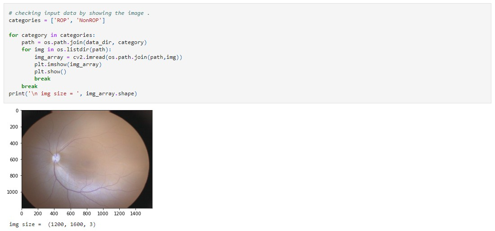
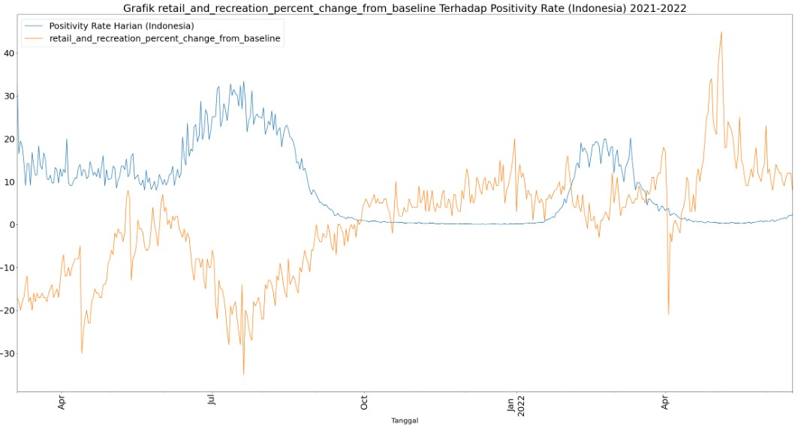
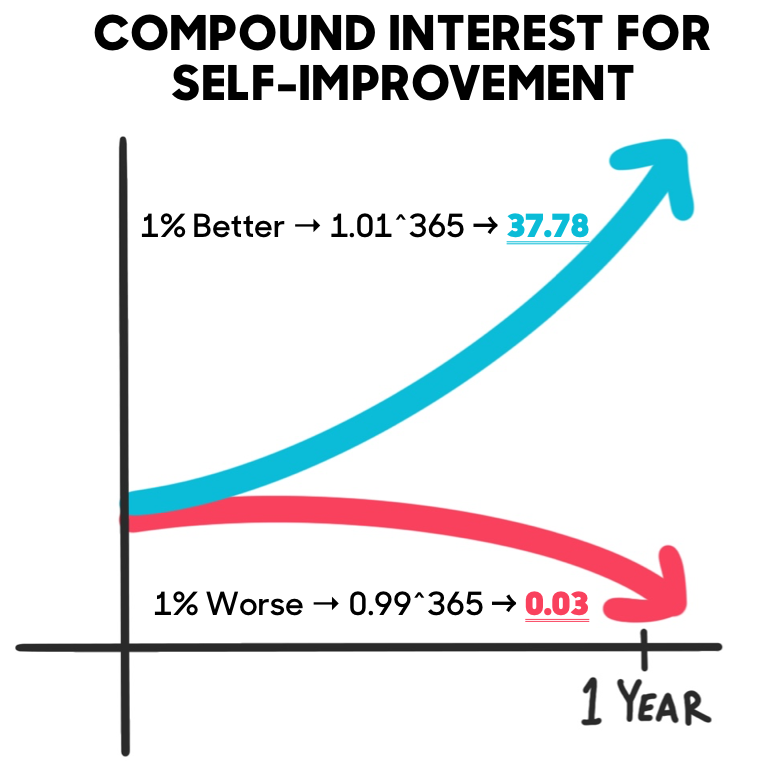
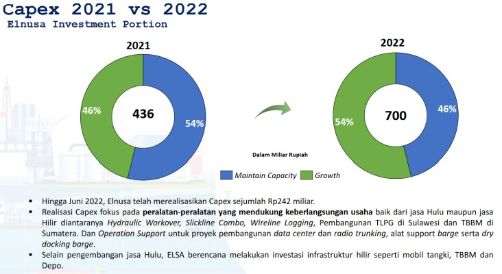

Technological developments cannot be denied where we can see that as the years go by, the developments that occur are also increasing rapidly. Therefore, Angel is interested in pursuing the field of computing, one of which is Machine Learning. Here are some of the projects that Angel has made so far.
Detecting Retinopathy of Prematurity Disease in Premature Baby Based on Fundus Image Data with CNN Model using VGG19's Architecture

Image 1. Retinopathy Image
The purpose of this project is to explain how the Convolutional Neural Network method works in detecting Retinopathy of prematurity (ROP) in premature babies, knowing the effect of data augmentation on the model in the application of cases of detection of Retinopathy of prematurity (ROP) in premature infants, and analyzing the performance of the model without data augmentation and with data augmentation to get the best model for the application of Retinopathy of prematurity (ROP) detection cases in premature infants.
Mobility Correlation Analysis on Indonesian Daily Positivity Rate using Multivariate Regression

Image 2. Mobility Graph
In 2022, the COVID-19 pandemic has started to subside. Many people carry out normal activities, as if this virus was gone. However, people's activities and mobility, especially in the Indonesian region, still depend on the number of COVID-19 considering that there are still policies that must be obeyed to prevent an increase in the virus. Therefore, it will be seen which mobility factors are strongly affected by the increase in COVID-19 so that it can be seen which fields are able to run normally as the decline in COVID-19.
Self-Development
Becoming the best version of yourself is the ultimate goal in life. Many things can be done to achieve this goal. Here are some ways that Angel does as a way to develop yourself.
Wake Up At 5AM
Most successful people start their day at 5AM. Inspired by the book "The 5AM Club" by Robin Sharma, Angel applies the 20/20/20 rule for the first hour of each day. Based on a revolutionary morning routine that has helped his clients maximize their productivity, activate their best health and bulletproof their serenity in this age of overwhelming complexity.
Do Financial Tracker
It's important to know where your money is going. With the financial mindset presented by Morgan Housel in his book "The Psychology of Money", Angel always records her cash flow on a Google Sheet. Doing well with money isn't necessarily about what you know. It's about how you behave. And behavior is hard to teach, even to really smart people.
Habit Is The Key

Packed with evidence-based strategies, "Atomic Habits" by James Clear will teach you how to make small changes that will transform your habits and deliver amazing results. If everyday we can grow 1%, then in end of the year, we will grow about 37.78%.
Investment
Investing is something that is currently popular among teenagers.
However, don't fall for the wrong investment technique.
Following are some of the analyzes conducted by Angel regarding the companies in his portfolio, namely ELNUSA.

Image 1. Elnusa Investment Portion
You can buy service businesses and oil and gas
services at prices well below value its book, at which point I
believe
...
we will experience a multi-year periodof price oil which is above average resulting in increased activity in the upstream oil rapidly. Elnusa's business can be divided into three main categories, namely the upstream oil and gas service business, upstream oil and gas supporting services, and downstream distribution and logistics businesses (BBM, LPG, as well other chemicals).
Let's assume that Elnusa's upstream oil and gas business will never start next year
again posting a net profit (no loss but 0% ROE), Elnusa is still going
generating around 500+ Billion net cash flow annually (assuming this figure
is bear case net profit + 280 net cash flow without growth capex). Market now
valuing Elnusa only 5 times its FCF bottom cycle, at my current price
Elnusa responded that the worst case scenario had been assessed. The 2021 EPN production/performance realization is similar to the 2021 EPN realization figures
2019. But EPN has higher capacity in 2021 it should
EPN can score higher production realization than in 2019. EPN assets
at the end of the 3rd quarter of 2022 grew by approximately 40% from the end of 2021 EPN assets, which
signaling increased activity in EPN, I think we're at a turning point in EPN's performance
towards the historical average level of profitability (ie 30% ROE). Up to you
3rd quarter 2022 EPN posted a net profit of 240 billion.